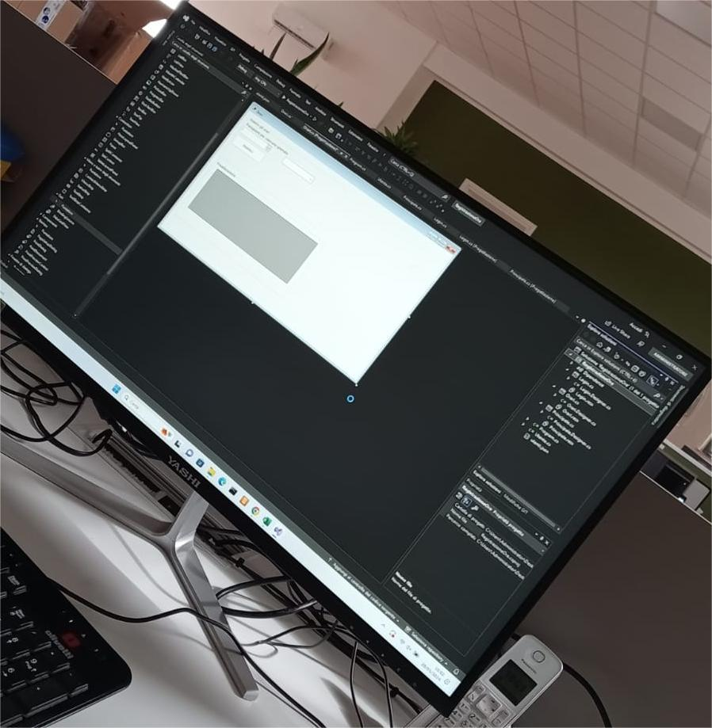
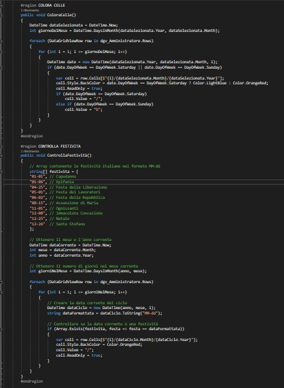

Gestione Orari
Il progetto realizzato durante il PCTO è stato lo sviluppo di un progetto Visual Studio per la gestione degli orari dei dipendenti dell'azienda.
Ho lavorato su design, struttura e codice
front-end.
Durante lo sviluppo del progetto, insieme al mio compagno, ci siamo trovati varie volte in difficolà, ma siamo comunque riusciti a cavarcela grazie a
qualche aiuto da parte dei ragazzi che lavorano in Menerva e anche grazie all'aiuto dell'intelligenza artificiale.
Siamo riusciti a far funzionare bene il software seguendo le indicazioni che ci erano state assegnate.


PCTO: Una Settimana a Scuola
A causa della bocciatura, ho dovuto riprendere la scuola nella settimana in cui i quinti avevano PCTO, così anche io sono andato a scuola e ho partecipato assieme ad altri due ragazzi nell'aiutare la scuola a sistemare i vari laboratori e programmi di laboratorio da installare e disinstallare nei vari computer di entrambi i plessi della struttura. Questa è stata un'occasione per imparare nuove cose sia su come la scuola si prepara a riaprire agli studenti, sia sull'utilizzo di programmi che di solito utilizzano solo i professori come gestione del laboratorio. Grazie a questo programma, io e gli altri due ragazzi a cui mi sono unito in questo periodo, siamo riusciti a completare i lavori più velocemente utilizzando quindi uno strumento che aiuta di molto nell'organizzazione dei compiti assegnati. Purtroppo non ho potuto scattare foto di questo periodo perché avevo il telefono rotto, ma sicuro mi ricorderò delle cose fatte in questa settimana.